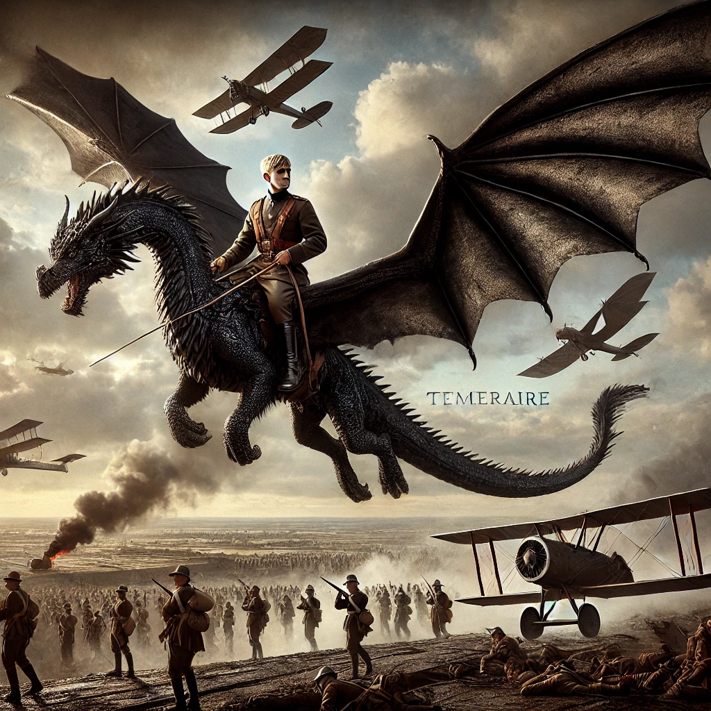

테메레르
목차
작가
나오미 노빅
출판일
2007년
감상평에 대한 AI그림
나폴레옹 전쟁이 벌어지던 19세기 유럽을 배경으로 판타지적 요소인 용을 등장시켜 설정부터 매력적이었다. 당시 존재하지 않던 공군을 용으로 대체해 적절한 현실성과 환상적인 느낌을 받았다. 주인공 로렌스는 해군으로 복무하던 청년이었는데 우연히 용의 알을 얻게 되면서 비행사가 된다. 처음에는 공군에 대한 거부감 때문에 알에서 깨어난 테메레르를 좋아하지 않지만 점점 테메레르와 정이 들고 마지막에는 공군으로서 정체성을 가지게 된다는 점이 흥미롭다. 주인공과 같이 다니는 용인 테메레르는 까만 용인데 읽는 동안 용이 나오는 비슷한 작품의 드래곤 길들이기의 투슬리스가 생각났다.

감상평에 대한 AI 감정 평가
이 감상평에서는 작품의 설정과 세계관에 대한 흥미, 주인공의 성장 과정에 대한 몰입, 그리고 다른 작품과의 연관성을 통해 느낀 친숙함이 드러나. 전체적으로 긍정적이고 작품을 즐겼다는 감정이 강하게 느껴져!
✨ 🔹 흥미 (★★★★☆) – "설정부터 매력적이었다"라는 표현에서 작품의 세계관에 강한 관심을 느낄 수 있어.
✨ 🔹 감탄 (★★★★☆) – "적절한 현실성과 환상적인 느낌을 받았다"라는 문장에서 작가의 설정 방식에 대한 감탄이 드러나.
✨ 🔹 몰입 (★★★★☆) – 주인공 로렌스의 성장 과정과 테메레르와의 관계 변화에 주목한 점에서 이야기 속으로 깊이 빠져든 느낌이 들어.
✨ 🔹 연결감 (★★★☆☆) – "드래곤 길들이기의 투슬리스가 생각났다"라는 부분에서 개인적인 경험과 비교하는 점이 보여.